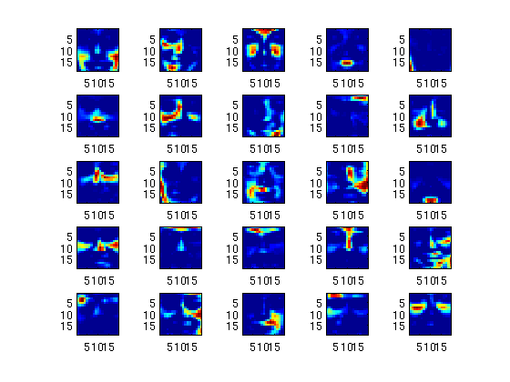
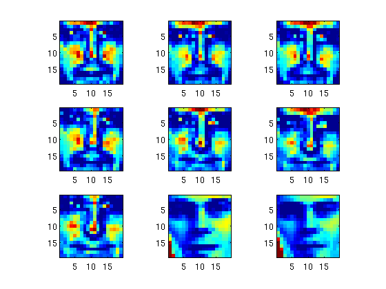
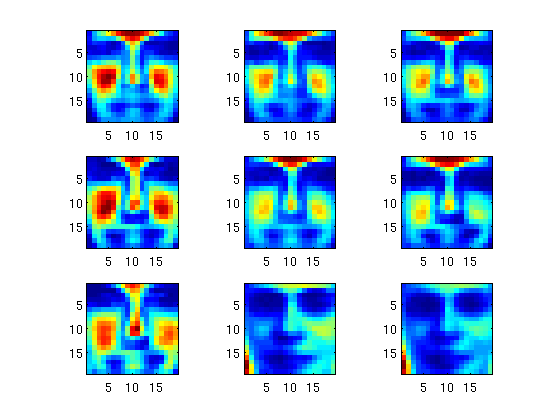

Contents
Read in face image data matrix and initial values
Assume files 'nnmf-2429-by-361-face.txt', 'V0,txt', 'W0.txt' or symbolic links to them are in the current folder.
clear; X = dlmread('nnmf-2429-by-361-face.txt'); V0full = dlmread('V0.txt'); W0full = dlmread('W0.txt');
Display function content
type nnegmf;
function [V, W] = nnegmf(X, r, varargin)
% NNEGMF Non-negative matrix factorization by multiplicative updates
% [V, W] = NNEGMF(X, r) finds m-by-r V and r-by-n W with nonnegative
% entries that such that norm(X - V * W, 'fro') is minimal.
%
% INPUT:
% X - m-by-n data matrix with nonnegative entries
% r - a positive rank
%
% OPTIONAL NAME-VALUE PAIRS:
% 'device' - device for computation; 'cpu' (default) or 'gpu'
% 'maxiter' - maximal number of iterations
% 'precision' - precision for GPU; 'single' (default) or 'double'
% 'tolfun' - convergence tolerance for relative change in objective value
% 'V0' - starting point for V
% 'W0' - starting point for W
%
% OUTPUT:
% V, W - optimal V and W
%
% See also nnmf.
%
% Example
%
% References
%
% Copyright 2015 North Carolina State University
% Hua Zhou (hua_zhou@ncsu.edu)
% input parsing rule
[m, n] = size(X);
argin = inputParser;
argin.addRequired('X', @isnumeric);
argin.addRequired('r', @(x) isnumeric(x) && r > 0);
argin.addParamValue('device', 'cpu', @ischar);
argin.addParamValue('maxiter', 1e4, @isnumeric);
argin.addParamValue('precision', 'single', @ischar);
argin.addParamValue('tolfun', 1e-4, @isnumeric);
argin.addParamValue('V0', rand(m, r), @isnumeric);
argin.addParamValue('W0', rand(r, n), @isnumeric);
% parse inputs
argin.parse(X, r, varargin{:});
device = argin.Results.device;
maxiter = argin.Results.maxiter;
precision = argin.Results.precision;
tolfun = argin.Results.tolfun;
V = max(argin.Results.V0, 1e-8); % stay away from sticky boundary
W = max(argin.Results.W0, 1e-8); % stay away from sticky boundary
if strcmpi(device, 'cpu')
% MM loop
B = V * W;
obj = norm(X - B, 'fro')^2;
for iter = 1:maxiter
% multiplicative update of V and W
V = V .* (X * W') ./ (B * W');
B = V * W;
W = W .* (V' * X) ./ (V' * B);
B = V * W;
% check stopping criterion
objold = obj;
obj = norm(X - B, 'fro')^2;
if abs(obj - objold) < tolfun * (objold + 1)
break
end
end
elseif strcmpi(device, 'gpu')
% transfer data to GPU
if strcmpi(precision, 'single')
X_g = gpuArray(single(X));
V_g = gpuArray(single(V));
W_g = gpuArray(single(W));
elseif strcmpi(precision, 'double')
X_g = gpuArray(X);
V_g = gpuArray(V);
W_g = gpuArray(W);
end
% MM loop
B_g = V_g * W_g;
obj = norm(X_g - B_g, 'fro')^2;
for iter = 1:maxiter
% multiplicative update of V and W
V_g = V_g .* (X_g * W_g') ./ (B_g * W_g');
B_g = V_g * W_g;
W_g = W_g .* (V_g' * X_g) ./ (V_g' * B_g);
B_g = V_g * W_g;
% check stopping criterion
objold = obj;
obj = norm(X_g - B_g, 'fro')^2;
if abs(obj - objold) < tolfun * (objold + 1)
break
end
end
% retrieve result from GPU
V = gather(V_g);
W = gather(W_g);
end
end
Check CPU/GPU configuration
cpuinfo gpuDevice
ans =
Name: 'Intel(R) Xeon(R) CPU E5-2640 0 @ 2.50GHz'
Clock: '2500.145 MHz'
Cache: '15360 KB'
NumProcessors: 6
OSType: 'Linux'
OSVersion: 'mockbuild@c6b9.bsys.dev.centos.org'
ans =
CUDADevice with properties:
Name: 'Tesla M2090'
Index: 1
ComputeCapability: '2.0'
SupportsDouble: 1
DriverVersion: 6.5000
ToolkitVersion: 5.5000
MaxThreadsPerBlock: 1024
MaxShmemPerBlock: 49152
MaxThreadBlockSize: [1024 1024 64]
MaxGridSize: [65535 65535 65535]
SIMDWidth: 32
TotalMemory: 5.6366e+09
FreeMemory: 5.5439e+09
MultiprocessorCount: 16
ClockRateKHz: 1301000
ComputeMode: 'Default'
GPUOverlapsTransfers: 1
KernelExecutionTimeout: 0
CanMapHostMemory: 1
DeviceSupported: 1
DeviceSelected: 1
Timing CPU, GPU SP (single precision), and GPU DP (double precision) algos
rlist = 10:10:50; runtime = zeros(length(rlist), 3); objval = zeros(length(rlist), 3); for i = 1:length(rlist) % rank r = rlist(i); display(['rank = ' num2str(r)]); % starting value V0 = V0full(:, 1:r); W0 = W0full(1:r, :); % CPU tic; [V1, W1] = nnegmf(X, r, 'V0', V0, 'W0', W0); runtime(i, 1) = toc; objval(i, 1) = norm(X - V1 * W1, 'fro')^2; % GPU SP tic; [V2, W2] = nnegmf(X, r, 'V0', V0, 'W0', W0, 'device', 'gpu'); runtime(i, 2) = toc; objval(i, 2) = norm(X - V2 * W2, 'fro')^2; % GPU DP tic; [V3, W3] = nnegmf(X, r, 'V0', V0, 'W0', W0, 'device', 'gpu', ... 'precision', 'double'); runtime(i, 3) = toc; objval(i, 3) = norm(X - V3 * W3, 'fro')^2; end
rank = 10 rank = 20 rank = 30 rank = 40 rank = 50
Display timing results
table(rlist', runtime(:, 1), runtime(:, 2), runtime(:, 3), ... objval(:, 1) / 1e3, objval(:, 2) / 1e3, objval(:, 3) / 1e3, ... 'VariableNames', {'Rank', 'CPU_Time', ... 'GPU_SP_Time', 'GPU_DP_Time', 'CPU_Obj', 'GPU_SP_Obj', 'GPU_DP_Obj'})
ans =
Rank CPU_Time GPU_SP_Time GPU_DP_Time CPU_Obj GPU_SP_Obj
____ ________ ___________ ___________ _______ __________
10 3.9667 1.9791 0.82886 11.73 11.73
20 13.475 1.212 1.3225 8.4972 8.4972
30 17.411 1.5691 1.6621 6.6216 6.6223
40 20.957 1.9857 2.3876 5.2567 5.2567
50 29.982 2.6002 2.9786 4.4302 4.4302
GPU_DP_Obj
__________
11.73
8.4972
6.6216
5.2567
4.4302
Display basis images in W at rank = 25
r = 25; V0 = V0full(:, 1:r); W0 = W0full(1:r, :); [V, W] = nnegmf(X, r, 'V0', V0, 'W0', W0); % display 25 basis images figure; hold on; set(gca, 'FontSize', 20); for i = 1:25 subplot(5, 5, i); imagesc(reshape(W(i, :), 19, 19)); axis equal; axis tight; end
Display first 9 faces and the approximate images at rank = 25
% display the first 9 faces figure; hold on; set(gca, 'FontSize', 20); for i = 1:9 subplot(3, 3, i); imagesc(reshape(X(i, :), 19, 19)); axis equal; axis tight; end % approximation by NNMF at r = 25 figure; hold on; set(gca, 'FontSize', 20); for i = 1:9 subplot(3, 3, i); imagesc(reshape(V(i,:) * W, 19, 19)); axis equal; axis tight; end 